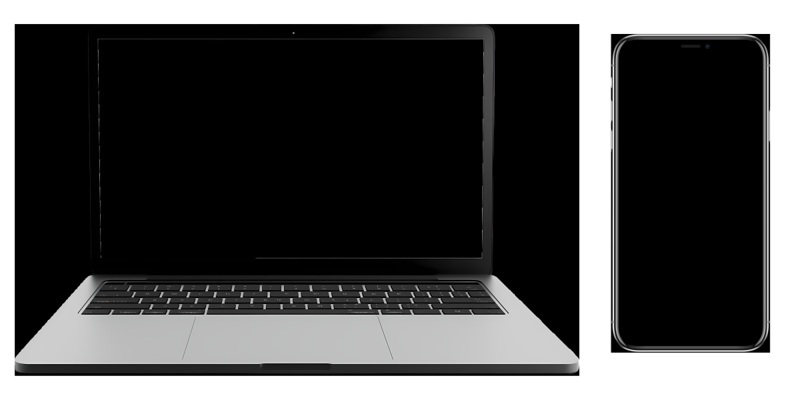

Built for normal humans who want better sound without becoming acoustics nerds.
Measurely is a tiny room-analysis box that listens to your room, runs a sweep, and reveals the acoustic issues holding your system back. Dave lives inside that box — a tiny purple Tamagotchi who translates the technical nonsense into actions you can actually do.
Runs entirely offline in the box. No logins. No accounts. No data harvesting.
Dave explains graphs using words you’d actually use in real life.
Most fixes cost £0–£20. Not hundreds on new gear you don’t need.
Measurely isn’t an app. It isn’t guesswork. It’s a compact analysis box that listens to your space, runs a calibrated sweep, and shows you where your sound is going wrong.
Dave then turns the technical acoustics nonsense into simple, clear actions. He’s basically a purple Tamagotchi that knows acoustics — only instead of dying when you forget to feed him, he just quietly improves your sound.
The box captures real acoustic measurements. Dave translates them.
The Measurely box creates its own local WiFi. No router passwords. No cloud. No app. No accounts. No internet required.
measurely.local:5000
in your browser
No apps. No accounts. No downloads. Just open your browser and the Measurely interface appears instantly.
• Calibrated USB mic • Measurely Pi • RCA cable • Power supply • Return postage
measurely.local“Thought my speakers were knackered. Turns out it was the carpet. Dave sorted it between pints.”
Bloke Down the Pub“Didn’t understand a single graph. Dave told me to move the sofa. Worked.”
Woman on the Bus“Nearly bought a £900 sub. Dave said ‘move couch.’ He was right.”
Guy Walking His Dog“Spent weeks researching diffusers. Dave said ‘buy a rug.’ £18. Sorted.”
Man Who Googles Too Much